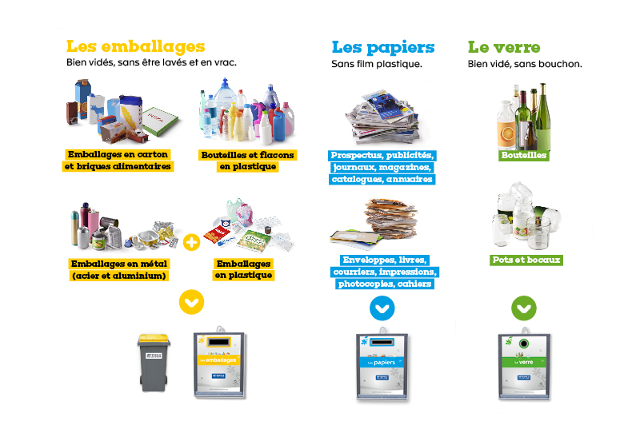

How to use the recycling bins
Before describing each recycling bin, let me tell you what should NEVER go in any of them: do not put any organic waste, food, or anything that could potentially smell . Examples of items NOT to put in the bins: dirty pizza boxes with food residue, wrappers from tacos or hamburgers, dirty tuna cans... Also, I know the city instructions say that you don't need to rinse the containers in general, for the recycling process this makes sense, but for the sake of preventing any potential smells in the apartment there are some things that should be rinsed or washed. For instance, a bean can should be rinsed before putting it in the recycling bins, a tuna can should be washed. Consider using the dishwasher for this purpose, it's easy and you won't cut yourself on the sharp edges of the cans.
Glass (Le verre)
Glass bottles, jars, and containers. Make sure they are empty, no lids, and give them a quick rinse.
Paper (Les papiers)
Flyers, advertisements, newspapers, magazines, catalogs, directories, envelopes, books, mail, prints, photocopies, notebooks.
General packaging (Les emballages)
Cardboard packaging, plastic bottles and containers, metal packaging (including empty coffee capsules), other plastic packaging.
Non-recyclable
Non-recyclable: Everything else, including all organic and/or potentially smelly.